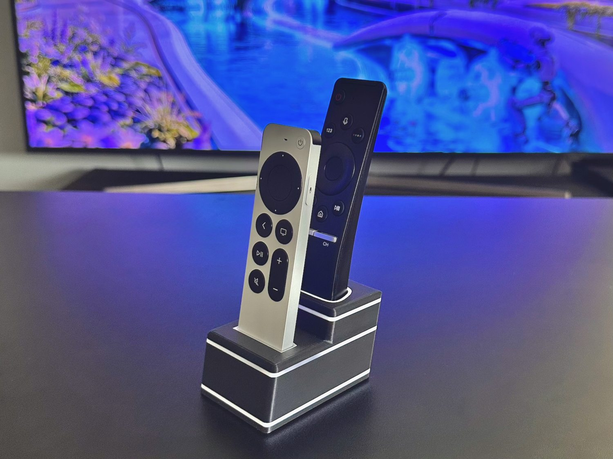
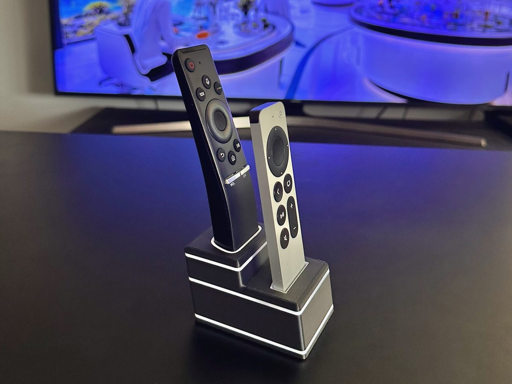
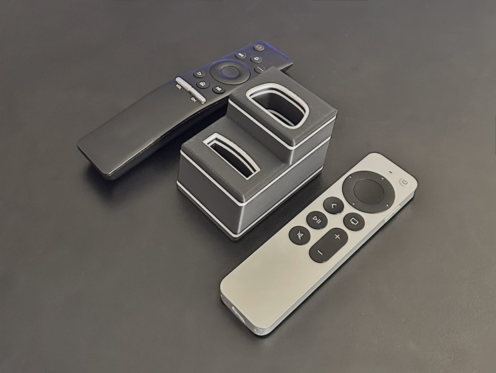
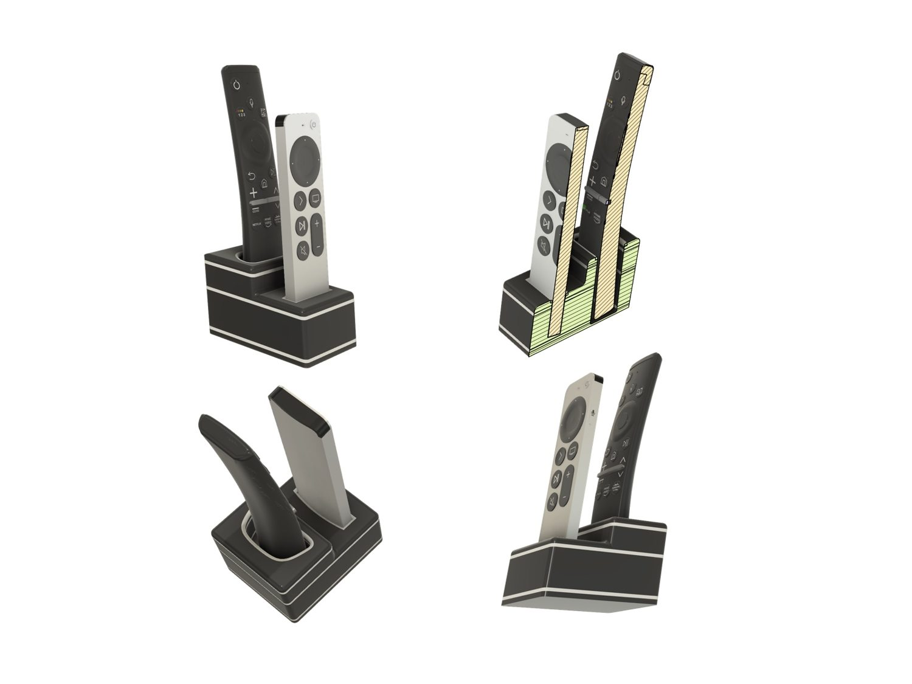
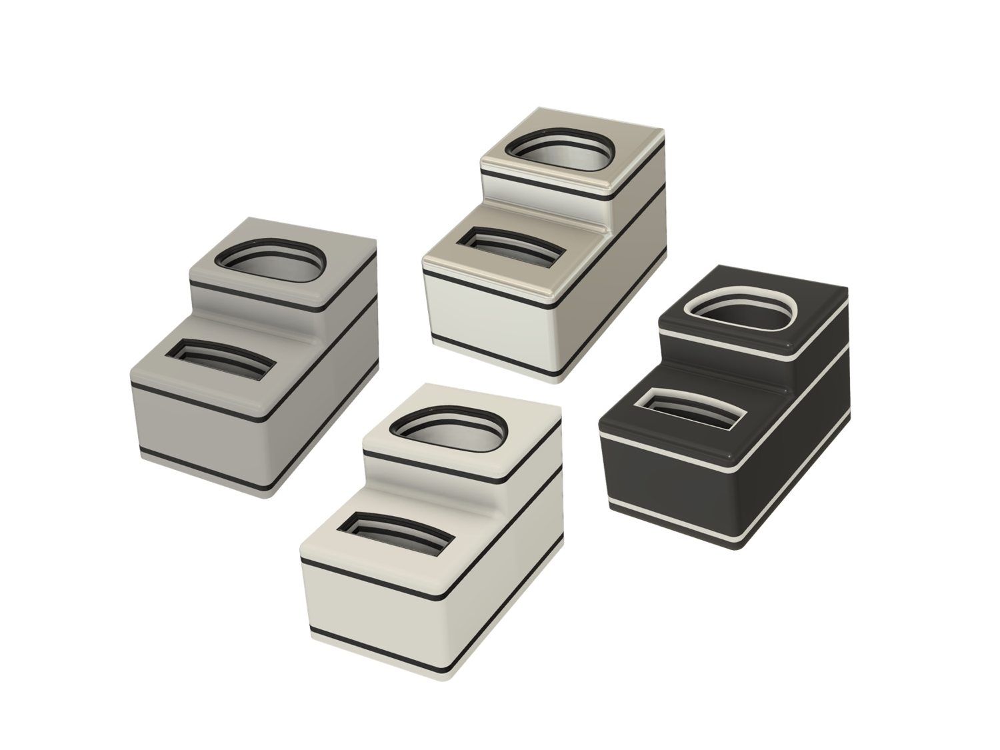
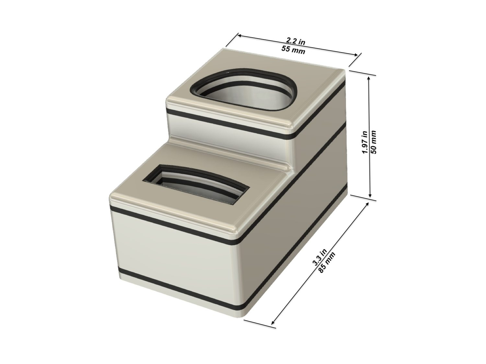

Two dedicated openings
A narrow front slot for Siri Remote and a contoured rear opening for the compatible Samsung remote.

Apple TV accessories
Two custom-fit slots · Four colors · Weighted PETG
Organize your Apple Siri Remote and compatible Samsung TV Remote together in a compact stepped desktop stand. Two individually shaped openings hold the remotes upright and within easy reach.
Physical stand only. Remote controls are not included.
A narrow front slot for Siri Remote and a contoured rear opening for the compatible Samsung remote.
PETG printed at 40% infill for additional weight when inserting or removing remotes.
Keep both remotes organized on a desk, shelf, or media console without installation.
Product overview
Explore the compact shape and how the remote fits.
Design details



Color choices
Choose Black, Silver, Gray, or White when ordering the finished stand.

Specifications

Choose your format
Order a finished PETG stand or download the printable design.
Ready to use
One finished 3D printed stand in your selected color. Remotes not included.
For makers
Download the model to print yourself. Platform licenses and terms differ.
Support
Contact Yutaka3DLab with your remote model and product name.
Apple, Apple TV, Siri Remote, and Samsung are trademarks of their respective owners. Yutaka3DLab is an independent accessory designer and is not affiliated with or endorsed by Apple or Samsung.